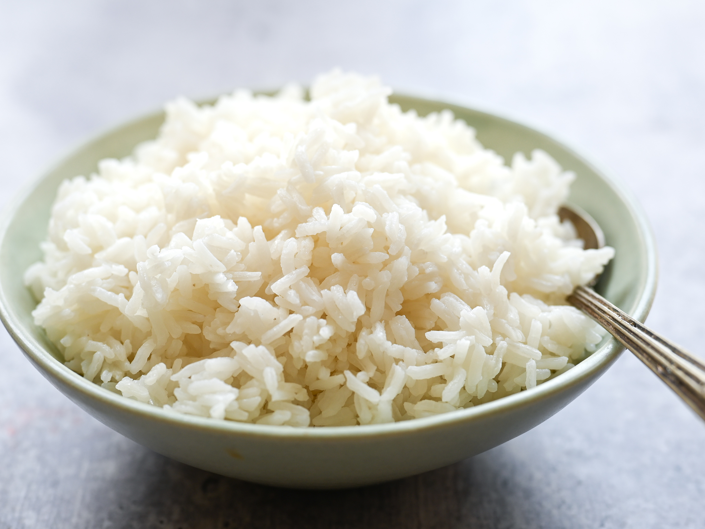

Rice

Rice... what more needs to be said?
It's just white rice
Ingredients
- 1 cup white rice of choice
- 2 cups water
- A pinch of salt
Steps
- Add rice, water, and salt to medium sauce pan
- Bring to a boil
- Reduce heat to low and cover
- Let simmer for 15 minutes+. DO NOT LIFT THE COVER.
- Fluff rice with a fork or spatula or whatever and serve
- Enjoy!
Return to homepage